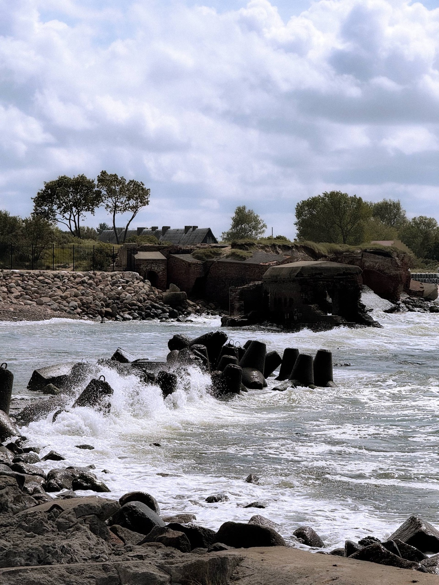
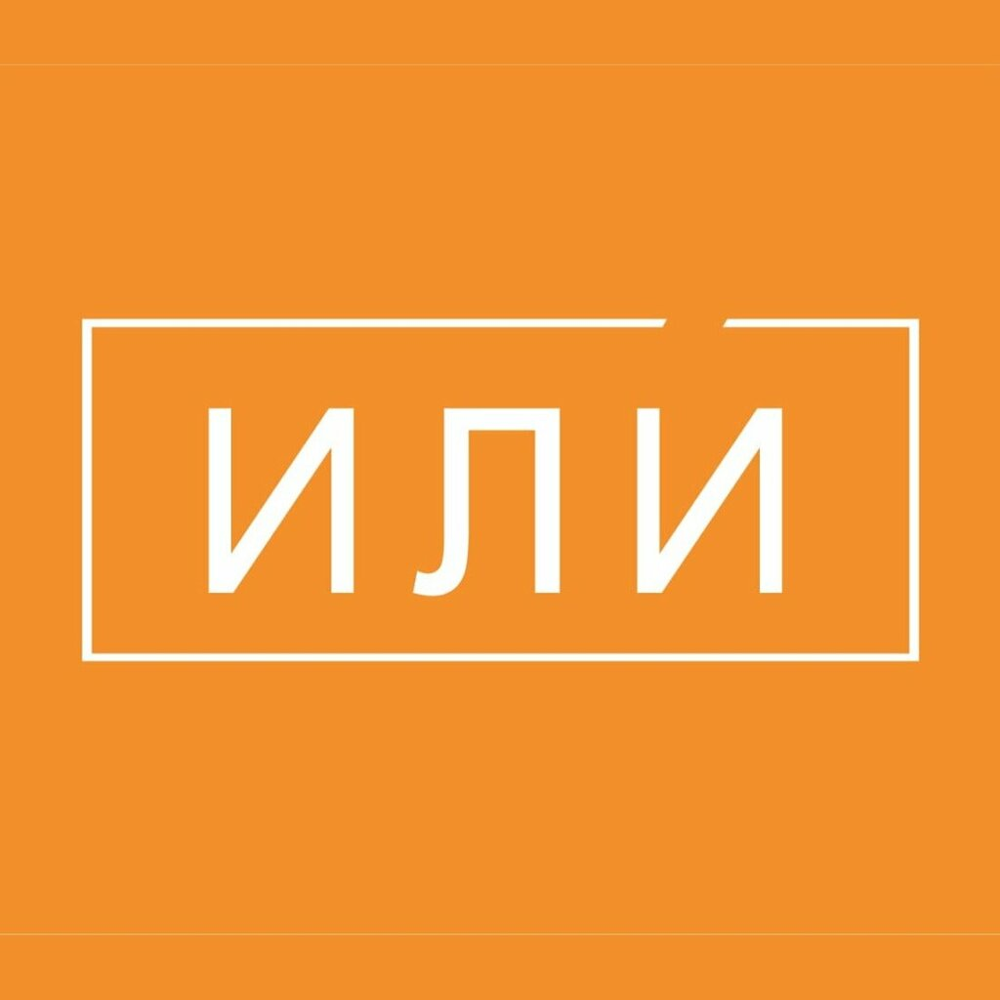
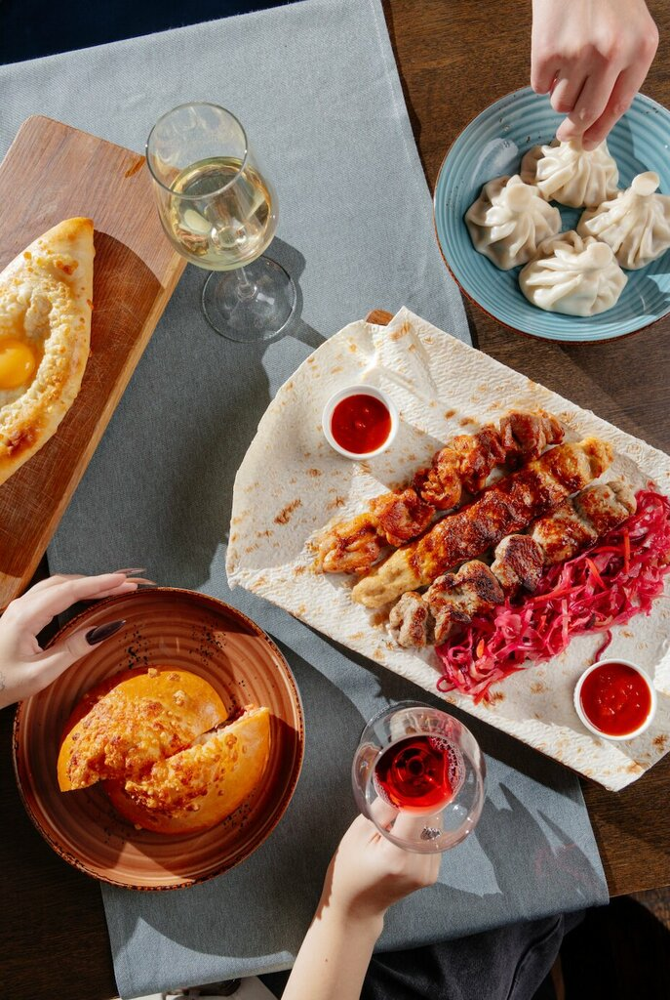
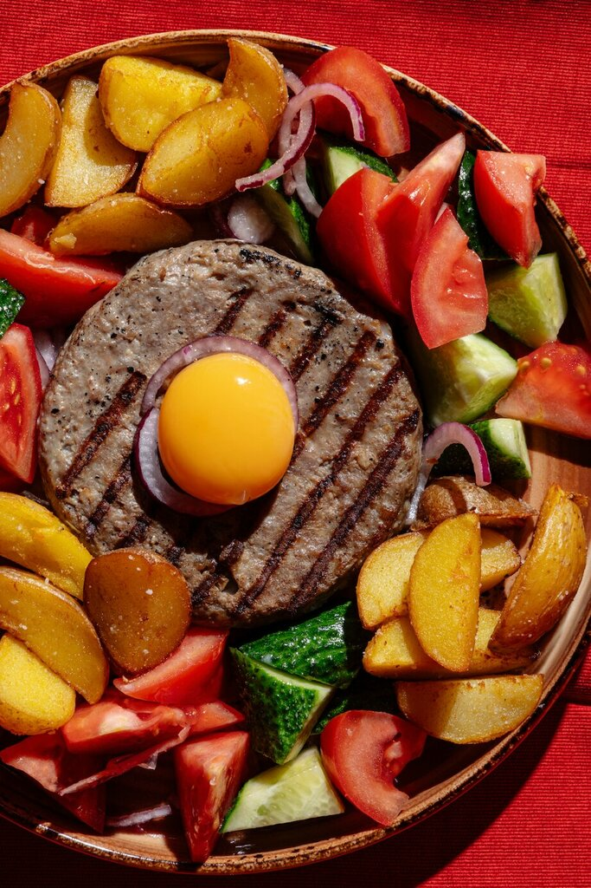

ДЛЯ ОДНОЙ ОЧЕНЬ КЛАССНОЙ ДИЗАЙНЕРШИVOL. 01 — ВНЕ РАБОЧИХ ЧАТОВ
ИЛИ ТЫ ИДЁШЬ
СО МНОЙ, ИЛИ…
Ладно, никакого «или».
Просто хочу позвать тебя на ужин.

ПЛАН НА ВЕЧЕР:
ВЫЙТИ ИЗ ФИГМЫ.
НОВЫЙ ДЕДЛАЙНПОБЫТЬ
ВДВОЁМ ↗
59.9363° NВДВОЁМ ↗
30.3477° E
01 / МЕСТО УЖЕ НАШЛОСЬУЖИН. РАЗГОВОРЫ.
УЖИН. РАЗГОВОРЫ.
БЕЗ «ЕЩЁ ОДНОЙ
ПРАВКИ».
Предлагаю на вечер закрыть вкладки.
Открыть меню. И посмотреть друг на друга
без курсора между нами.

ИЛИ / ЛИТЕЙНЫЙ, 53Показать место на карте ↗
Ресторан выбран. Вечер выберем вместе.


+ ЧТО-НИБУДЬ ВКУСНОЕ
02 / САМЫЙ ВАЖНЫЙ ВОПРОСНУ ЧТО,
НУ ЧТО,
ИДЁМ?
Обещаю: презентации не будет.
Хотя этот сайт уже немного считается.
тут очень хочется нажать ↓
У кнопки «нет» сложный характер.